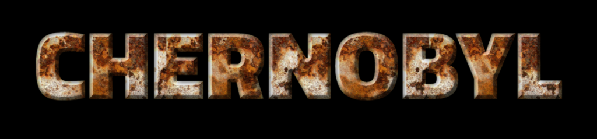

In the early hours of April 26, 1986, the world witnessed one of the most catastrophic nuclear accidents in history at the Chernobyl Nuclear Power Plant near Pripyat, Ukraine. The disaster, driven by a fatal combination of human error and reactor design flaws, unleashed a torrent of radioactive material into the atmosphere. This event not only altered the course of history but also underscored the fragile balance between human ambition and technological risk.
The immediate aftermath was marked by chaos and uncertainty, as authorities scrambled to contain the damage and mitigate the fallout. This catastrophe would not only redefine the global perspective on nuclear power but also leave a lasting imprint on the landscape, the environment, and the lives of those who were caught in its devastating wake. Our journey delves into the intricate details of this calamity, exploring its profound impact on both the environment and the lives of those affected.

Learn more about the history and impact of the Chernobyl disaster.

The Chernobyl Nuclear Power Plant, erected in the 1970s, was intended to be a beacon of Soviet technological prowess, symbolizing the promise of cheap and limitless energy. The plant’s construction showcased the Soviet Union’s ambition to harness nuclear power for a new era. However, beneath this impressive exterior lay critical design flaws in the RBMK reactor—a reactor type that, despite its innovative features, was inherently unstable and poorly equipped with safety mechanisms. These flaws would ultimately play a crucial role in the unfolding disaster.

On April 26, 1986, a routine safety test at Reactor 4 of the Chernobyl plant went disastrously wrong. The test, intended to simulate a power outage, triggered an uncontrollable surge in reactor power, leading to a series of explosions. The catastrophic blast blew the reactor’s lid off, releasing a massive amount of radioactive material into the atmosphere. In the immediate aftermath, firefighters and plant workers, many unaware of the full extent of the danger, rushed to control the blaze, showcasing remarkable bravery but facing grave consequences.
The explosion and subsequent fire spewed approximately 400 times more radioactive material into the atmosphere than the atomic bombing of Hiroshima. This radiation cloud drifted over Europe, exposing millions of people to dangerous levels of radiation. Despite the apparent danger, the Soviet government initially withheld information, downplaying the severity of the incident even as the first responders were unknowingly sacrificing their health and lives to contain the unfolding disaster.

In the wake of the explosion, a frantic evacuation was launched for the city of Pripyat, displacing over 49,000 residents who left their homes and possessions behind. The initial evacuation, intended as a temporary measure, evolved into a permanent relocation as the full scale of the contamination became apparent. To contain the radiation, a 30-kilometer exclusion zone was established around the plant, creating a vast area of abandonment that remains a stark reminder of the disaster’s impact.
The radioactive fallout from Chernobyl spread across Europe, contaminating air, water, and soil, with the highest levels of radiation affecting areas closest to the plant. This contamination led to significant environmental changes and ongoing ecological challenges. The health impacts were severe, with increased rates of thyroid cancer and other radiation-related illnesses among those exposed to the fallout. The long-term effects on both the environment and human health continue to be studied, revealing the enduring legacy of Chernobyl's disaster.
Back to Home